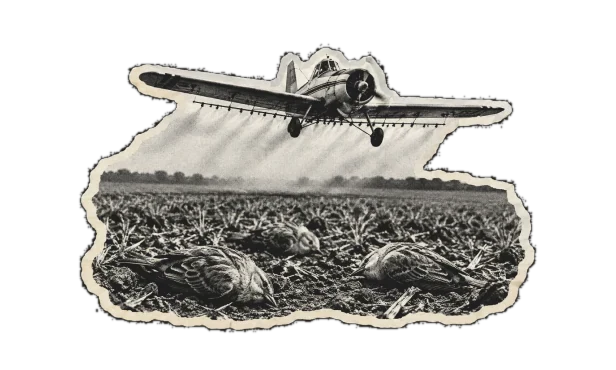

Rachel Carson, Silent Spring
Carson traced DDT from crop fields into birds, rivers and human bodies. Nature is no longer a store of resources outside us — what we do to it comes back to us.
- 1970First Earth Day: some 20 million Americans take part.
- 1972The US bans DDT; first UN environment summit.
- 2017New Zealand’s Whanganui River becomes a legal person.